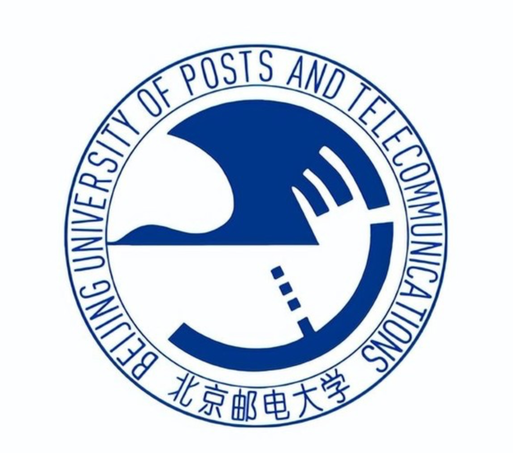

FastInfer: Breaking the Low-to-Moderate Sparsity Barrier for Efficient LLM Inference
Jinliang Shi
HPC for Machine Learning
About me
I am a Ph.D. candidate in Computer Science and Technology at Beijing University of Posts and Telecommunications, expected to graduate in June 2027. My research focuses on high-performance computing, GPU sparse computing, and efficient large-model training and inference systems.
Interests
- High-performance sparse operators on GPU
- Large-model training and inference systems
- Graph Neural Network Acceleration
Publications
First-Author Publications
UltraGNN: A Sparse-Operator-Aware Framework for Accelerating Graph Neural Networks on Tensor Cores
FlashSparse: Minimizing Computation Redundancy for Fast Sparse Matrix Multiplications on Tensor Cores
New YARN sharing GPU based on graphics memory granularity scheduling
Libra: Unleashing GPU Heterogeneity for High-Performance Sparse Matrix Multiplication
Other Publications
Talks
FastInfer: Breaking the Low-to-Moderate Sparsity Barrier for Efficient LLM Inference
SC '26 · Chicago, USA
FlashSparse: Minimizing Computation Redundancy for Fast Sparse Matrix Multiplications on Tensor Cores
HPC China '25 · Ordos, China
FlashSparse: Minimizing Computation Redundancy for Fast Sparse Matrix Multiplications on Tensor Cores
PPoPP '25 · Las Vegas, USA
FlashSparse: Minimizing Computation Redundancy for Fast Sparse Matrix Multiplications on Tensor Cores
2nd Youth Symposium on High-Performance Computing · Chongqing, China
Experience & Education
2026.07 – 2026.09
Large-Model Training Acceleration Intern @ Tencent
★ Qingyun Top Talent Program
2023.10 – 2025.01
GNN Model Operator Development @ Huawei

2023.09 – 2027.06
Ph.D. in Computer Science & Technology @ Beijing University of Posts and Telecommunications
Advisor: Prof. Shigang Li
2021.06 – 2021.08
Cloud Computing Development Intern @ Baidu
2020.09 – 2023.06
M.S. in Computer Science & Technology @ University of Science and Technology Beijing
Advisor: Prof. Jianjiang Li
2016.09 – 2020.06
B.S. in Computer Science & Technology @ Hebei Agricultural University
GitHub
ParCIS/FlashSparse
ProjectFast sparse matrix multiplications on Tensor Cores through Swap-and-Transpose mapping.
ParCIS/Libra
ProjectUnleashing GPU heterogeneity for high-performance sparse matrix multiplication.
ParCIS/FastInfer
ProjectBreaking the low-to-moderate sparsity barrier for efficient LLM inference.
ParCIS/UltraGNN
ProjectA sparse-operator-aware framework for accelerating graph neural networks on Tensor Cores.
Contact
Email:
shijinliang@bupt.edu.cn
/
sjlustb@163.com
Phone: +86 156 0338 1691
Visitor Map